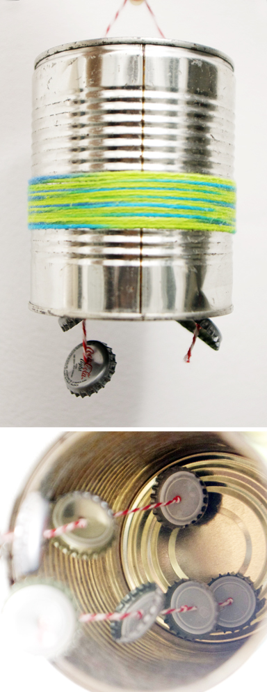
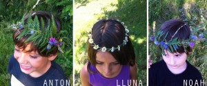
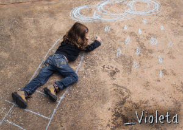

Los varitas magicas de Nora, Hannah, Elsa y Noah. Palitos de caña con washi tape y una punta especial.



Aquí un nuevo Instrumento de una lata y tapas de botellas. Hace bastante ruido.
Leer más →


En una tapa de cartón cortas en zig-zag, como aparece en la primera foto. Luego tienes que cortar los peces, que han de ser todos iguales,…
Leer más →